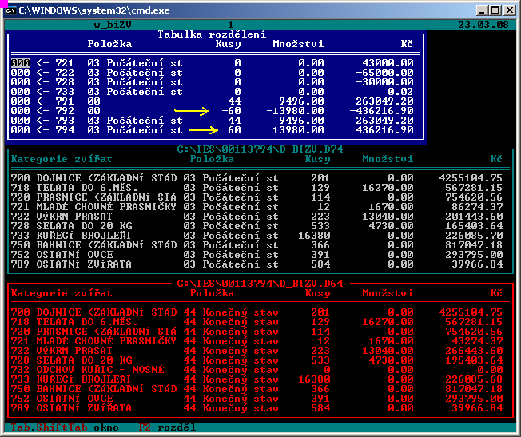
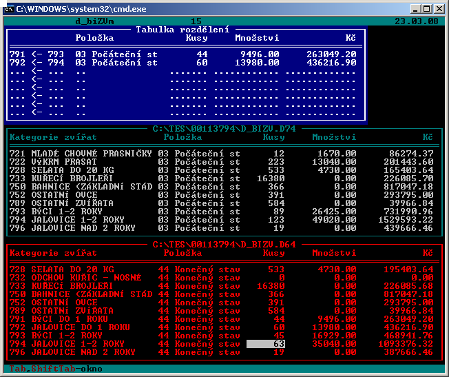
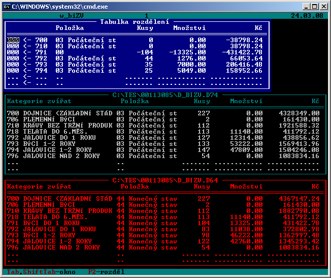

Změny ve verzi 9.05
Verzi 9.05 ze dne
21.7.2008
- Opravena chyba nastavení cest k souborům z minulého
roku při spuštění kontrol pro všechny zpracovávané podniky.
- Kontroly PS x KS
- doplněna kontrola PC a ZC dlouhodobého majetku v tabulce E. Dlouhodobý
majetek
- doplněna kontrola ocenění kvót v tabulce K. Kvóty
- z kontrol byla odstraněna tolerance rozdílu ze zaokrouhlení (hodnoty
loňského a běžného roku na sebe prý musí souhlasit přesně).
- Upozornění: při spouštění kontrol, ve kterých
je definována práce se soubory loňského roku dejte pozor na to, abyste
neměli soubory loňského roku otevřeny spuštěním loňského programu TES verze
8.xx. V takovém případě by docházelo ke kolizi se sdílením souborů mezi
dvěma různými aplikacemi.
- Při zobrazení výsledků kontrol PS x KS a kontrol
vazeb lze klávesou <F10> zobrazit definici kontroly. Rozdíl mezi sloupcem A
a B lze klávesou <Enter> přímo doplnit do tabulky, na kterou se postavíte
kurzorem.
Do příslušné tabulky je vždy vytvořen nový záznam (nikam se nic
nepřipočítává), aby bylo vždy dohledatelné, co se doplnilo.
Použití této funkce má smysl pouze u některých kontrol. Např. kontrola vazeb
č. 01-Aktiva=Pasíva porovnává řádek 01 z aktív a pasív, což jsou součtové
řádky a automatické doplnění rozdílu postrádá smysl. Taktéž nelze tuto
funkci používat např. mezi tabulkami D4.Podrobnější členění výkazů a
bilancemi, protože v některé tabulky jsou vedeny v tisících, některé v Kč.
Změny ve verzi 9.04
Verzi 9.04 ze dne
30.6.2008
- Aktiva, Pasíva, Závazky - doplněna kontrola hodnot
<Minulé účetní období> na soubory z loňského roku. Kontrola je dostupná
při editaci tabulek Aktiva, Pasíva a Závazky prostřednictvím klávesy <Ctrl_F10>.
- Doplněna možnost převzetí hodnot <Běžné
účetní období> z minulého roku do hodnot <Minulé účetní období> v
aktuálním období. Akci lze spustit klávesou Alt_F5 v editaci tabulek
Aktíva, Pasíva a Závazky.
- Do kontrol vazeb výkonů doplněna kontrola č. 16 -
porovnání počátečního stavu aktuálního roku na konečné stavy z loňských
souborů.
- Pro zpřístupnění souborů z loňského roku doplněna
nabídka <Nastavení - Cesty>, kde lze zadat cestu k souborům loňského
roku.
Úpravy číselníků
- Opraven číselník Dlouhodobý majetek - náplně
řádků. Do řádku 110 - Dlouhodobý nehmotný majetek se nepřebíraly
odpisy z obratu účtů 07x.
- Opravena kontrola vazeb 10-DM x aktiva KSR a
10-DM x aktiva PSR. Protože v tabulce dlouhodobý majetek není uváděn účet
027 a 087 - oceňovací rozdíl k nabytému majetku, musí se při kontrole
na rozvahu od celkové hodnoty dlouhodobého majetku odečíst řádek 22
rozvahy (oceňovací rozdíl k nabytému majetku). Protože toto nebylo v
kontrole zohledněno, hlásila kontrola chybu u podniků s oceňovacím rozdílem.
- Doplněna kontrola vazeb 60 35-Brambory na škrob. V řádku
35 musí být vyplněno naturální množství škrobu, které ovšem v
praxi asi ani nelze zjistit. Protože sazba doplatku je 1825,90 Kč/tunu škrobu,
upravuji množství vydělením dotace touto sazbou.
- V číselníku Kategorie zvířat ZEIS změněn výkon
pro kategorii 122200-kanci z 720 na 725.
Změny ve verzi 9.03
Verzi 9.03 ze dne
3.4.2008
- Do ostatních dotací dotací doplněn řádek č. 35 -
Doplňková platba pěstitelům brambor pro výrobu škrobu (část vázaná
na produkci). Protože tím došlo k přečíslování následujících
řádků 36, 37 a 38, opravte čísla řádků v datech již zpracovaných
podniků.
Změny ve verzi 9.02
Verzi 9.02 ze dne
25.3.2008
- Opraveno chybové hlášení Cesta xxxxx\ D_KVOTY.D74
nenalezena.
Změny ve verzi 9.01
Verzi 9.01 ze dne
24.3.2008
- Opraveno vytvoření tabulky Dotace v souboru XML. V
programu lze zadávat částky na 2 desetinná místa, exportovalo se
zaokrouhleno na celé tisíce.
- V nabídce <Vstupy-zákazníci-volba> lze
k jednotlivým podnikům doplnit poznámku. Editaci poznámky lze vyvolat klávesou
<Tabelátor>.
- Pro rok 2007 jsou zavedeny nové tzv. měkké kontroly
pro bilance ŽV, které sledují návaznost konečných stavů minulého
roku podle jednotlivých výkonů na počáteční stavy zpracovávaného
roku. Jedná se o kontroly č. P20381, P20382, P20383. Kontrolují se kusy,
kg i Kč. Podle sdělení pracovníků VUZE budou zřejmě od příštího
roku tyto kontroly tzv. tvrdé.
Do tabulky G.Bilance ŽV do nabídky <CtrlF10-Úpravy> byla
doplněna akce Srovnání PS a KS. Pro
porovnání počátečních stavů s konečnými stavy je nutno mít v adresáři
s IČ podniku soubor D_BIZV.?64. Spuštěním této nabídky se obrazovka
rozdělí do 3 editačních oken. Do jednoho se zobrazí konečné stavy z
minulého roku, do druhého počáteční stavy běžného roku.
Do třetího okna je vyčíslen rozdíl.
Příklad 1
Na uvedeném příkladu lze vidět, že v roce 2006 byl u tohoto podniku
rozdělen výkon 794 na výkon 792 a 794 a to tak, že v konečném stavu
bylo 60 kusů odděleno do výkonu 792. Tímto poměrem j tedy nutno rozdělit
i všechny letošní obraty.

Tabulku rozdělení je nutno upravit tak, aby v prvním sloupci
byl uveden výkon, na který bude rozdělení provedeno. Na příkladu
je nutno z počátečního stavu z výkonu 794 převést 60 kusů na výkon
792, z výkonu 793 převést 44 kusů na výkon 791. Z tabulky klávesou
CTRL_Y umažte řádky se zápornými hodnotami i řádky, kde není rozdíl
v kusech a kg. Klávesou F2 je spuštěno rozdělení výkonů
793 a 794 stejným mechanismem jaký znáte z nabídky 2-Rozdělení výkonu.
Z uvedených hodnot je stanoven poměr pro kusy, poměr pro kg a poměr pro
Kč. Těmito poměry jsou rozděleny všechny obraty za vyjmenované výkony.

Na příkladu jste si jistě povšimli i rozdílů v Kč u výkonů
prasat. Na tomto podniku jsem v loňském roce kvůli kontrolám průměrných
cen PS a KS přeházel Kč mezi jednotlivými výkony prasat tak, abych těmito
kontrolami prošel. Vyčíslené rozdíly musím v letošním roce ručně
upravit v počátečním stavu tak, aby navazovaly na KS loňského roku.
Samozřejmě se může stát, že se dostanu do kolize v kontrolách průměrných
cen.
Příklad 2
Na tomto příkladu byl v roce 2006 vytvořen výkon 791 a to z obratů
výkonů 792, 793 a 794. Tabulka rozdělení bude v tomto případě
vypadat následovně
| |
|
|
Kusy |
| 791 |
<- |
792 |
44 |
| 791 |
<- |
793 |
35 |
| 791 |
<- |
794 |
25 |

U tohoto podniku je zobrazen i rozdíl u základního
stáda dojnic a KBTPM. Rozdíl vzniká při převodech z 121100 na 121151.
Protože pořizovací ceny jsou přebírány z matričního souboru základního
stáda, je při tomto převodu pro inventární číslo pouze změněna
kategorie a tak na sebe PS a KS ani navazovat nemohou. Opravu lze provést
opět pouze ručně úpravou Kč v počátečních stavech a konečných
stavech.
Postup rozdělení obratů porovnáním PS a KS z minulého období berte
jako inspiraci. V každém případě by mohl usnadnit práci i v tom, že
stejně musíte rozdělit stádo podle věkové struktury, abyste vyhověli
kontrolám P20371 až P20377. Protože rozdělení stavů probíhá podle
stavů loňského roku, kdy data těmto kontrolám vyhověla, je vysoká
pravděpodobnost, že udržením tohoto poměru bude vyhověno kontrolám
i letos.
Změny ve verzi 9.00
Verzi 9.00 ze dne
2.3.2008
- Upravena struktura souborů pro import dat ze
subsystémů ZEIS podle aktuálně dostupných verzí programů.
- V adresáři DOK jsou uloženy webové stránky místo
provozní dokumentace a popisu změn ve verzích. Prohlížení z programu
TES spustí výchozí webový prohlížeč a zobrazuje stránky ze zmíněného
adresáře. Odkazy na uložené soubory (např. instalační soubory) jsou
nefunkční, protože nejsou v adresáři DOK uloženy.
- Pro distribuci programu použit instalační program
InnoSetup.
Změny v tabulkách
- B.Půdní fond podniku - zrušen řádek 16 -
LFA ekologické
- C.Práce - upraven číselník Pracovní dny pro rok 2007
pro výpočet přepočtených pracovníků
- D4.Podrobnější
členění výkazů - doplněny nové řádky 76,77 a 83,84 - uhrazené
provozní a investiční dotace.
V metodickém pokynu k náplni řádku 77 je uveden obrat strany Dal z účtu 346 a 347, čímž jsou myšleny přijaté
platby dotací. Protože v praxi nejsou všechny přijaté platby účtovány
ve prospěch účtu 346, ale přímo do výnosů, nastavil jsem definici nápočtu
do této řádky jako obrat účtu 6487xx a odečítám neuhrazené dotace
ze zůstatku účtu 346 a 388.
Do řádků 83 a 84 je nutno hodnoty vyplnit ručně.
Upozornění:
Na účtu 388 mohou být i jiné dohadné položky. Např. náhrady
pojistných plnění a podobně. Z toho důvodu je nutno překontrolovat, případně
upravit řádek 77.
Upraveno přečíslování řádků tabulky a definice
importu z účetnictví.
- E.Dlouhodobý majetek - změněna náplň a číslování
řádků 8 až 11. V souvislosti s tím byl upraven číselník SKP (přiřazení
SKP k řádku tabulky E) a číselník <Výkazy-náplně řádků
dlouhodobého majetku>
Změna ve sloupci 3 (investice zaúčtované v běžném účetním období).
Loni obsahoval investice před zaúčtováním dotací, letos po zaúčtování
dotací.
- E1.Podrobnější členění dlouhodobého majetku -
bylo zrušeno členění tabulky podle odpisových skupin.
Doplněno rozčlenění odepsaného movitého majetku podle stáří. Naplnění
probíhá při importu automaticky.
- E2.Finanční pronájem - bez úprav programu.
- F.Závazky - ve sloupcích 4 a 8 se mění název
na Ostatní aktiva. Náplň sloupců ke stejná jako v minulém roce tzn.
vykazují se zde závazky, které jsou zdrojem krytí všeho kromě nemovitého
majetku.
- K.Kvóty - od letošního roku se vyplňuje údaj
Odpisy. Protože z matričního souboru dlouhodobého majetku lze dost
těžko určit, na kterých inventárních číslech je mléčná kvóta,
bude údaj vyplňován ručně.